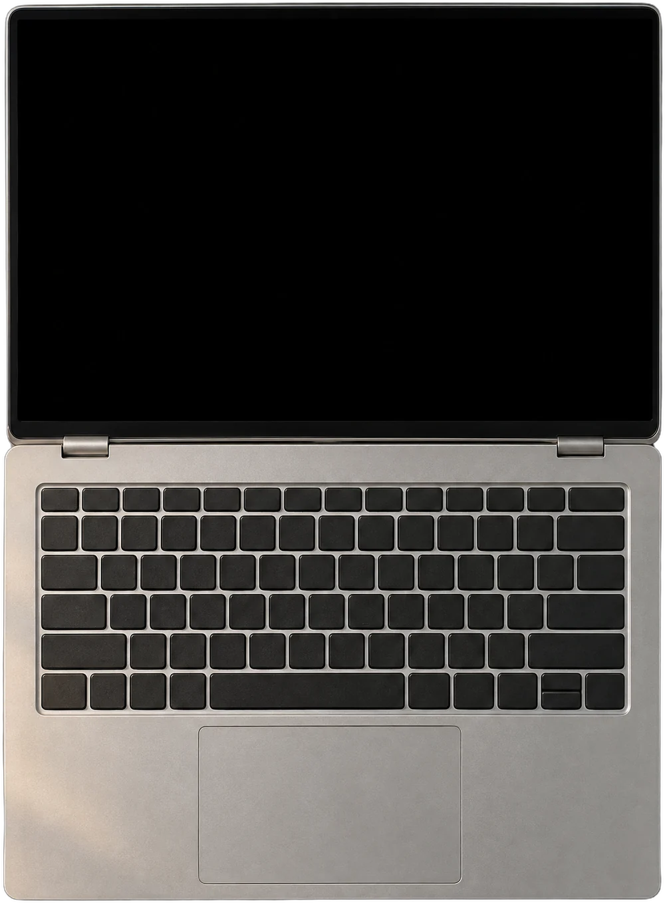

Reels montažas
Įmetu nufilmuotą video, o Claude Code sumontuoja: kirpimai, subtitrai, efektai, nuotraukos ir garsai. Viskas taip, kaip aš noriu.
Išbandyk efektusSusikurk savo AI komandą su Claude Code. Rutiną atiduodi jai, o kūryba lieka tau. Programuoti mokėti nereikia.

Claude Code~/mano-darbai

Šiandien
o aš geriu kavą
Turinio kūrėja, mokytoja ir vienintelė savo verslo darbuotoja.
Man nebereikia visko mokėti. Užtenka žinoti, ko noriu.
Kiekvienas robotukas yra vienas darbas, kurį atidaviau Claude Code. Paspausk bet kurį ir pažiūrėk, ką jis padarė.
Įmetu nufilmuotą video, o Claude Code sumontuoja: kirpimai, subtitrai, efektai, nuotraukos ir garsai. Viskas taip, kaip aš noriu.
Išbandyk efektus
Aprašau idėją, o skaidres su mano šriftais ir spalvomis sudeda Claude Code. Man lieka pasirinkti nuotrauką ir paskelbti.
Programėlė iš Stan pardavimų failo išrašo sąskaitas PDF formatu ir veda jų žurnalą. Programėlę sukūrė Claude Code.
Parašai komentare GIDAS ir iškart gauni žinutę su nuoroda. Automatiką ManyChat programoje sustatė Claude Code.


21 puslapio gidas ir 9 puslapių dovana, sumaketuoti su mano nuotraukomis ir veikiančiais mygtukais.
Šio gėrimo nėra. Jį sugalvojo Claude Code, o video sukūrė prijungęs Higgsfield. Lygiai taip pat ir tu gali susikurti judančią reklamą savo produktui.
Šią svetainę irgi sukūrė Claude Code. Man tereikėjo pasakyti, ko noriu, ir nuspręsti, kas patinka.
Nufilmuoju video telefonu ir parašau, ko noriu. Claude Code iškerpa pauzes, uždeda subtitrus mano šriftu ir prideda efektų. Viskas vyksta mano kompiuteryje, be kreditų.
Paspausk lapelį su prašymu.
Žurnalo viršelis
Paprastas montažas kasdieniams reels, montažas su efektais, o Mac kompiuteryje net pačioje Instagram Edits programoje. Viską rodau 13 modulyje.
„Patys geriausi pinigai, kuriuos galėjau išleisti.“
Po mokymų atsirado dar viena pora rankų ir dar viena galva. Paspausk žinutę, kad perskaitytum visą.
Claude Code nuo nulio
Keturiolika modulių su vaizdo pamokomis, kuriose viską rodau ekrane. Ne teoriškai, o savo kompiuteryje, savo darbams. Paspausk modulį ir pamatysi, ką po jo galėsi pasakyti Claude Code.
papasakok, ką gali padaryti už mane
97 € vietoj 147 €
Dabar gali prisijungti su nuolaida. Sumoki vieną kartą ir gauni:
Dar neapsisprendei? Parsisiųsk nemokamą gidą
Taip. Programuoti mokėti nereikia. Mokymai lietuviškai ir pradedami nuo nulio, o su Claude Code kalbi paprastais žodžiais. Vienas atsiliepimas taip ir prasideda: „Aš tikrai nesuprantu programavimo, bet jau darau stebuklus!“
Claude Code veikia su mokama Claude prenumerata, ir užtenka pigiausio plano už 22 € per mėnesį. Ją moki tiesiai Claude, daugiau nieko pirkti nereikia. Higgsfield ir kiti AI vaizdo įrankiai yra papildomi, tik jei norėsi.
Taip, abiem. Dirbame Visual Studio Code programoje, kuri veikia ir Windows, ir Mac.
Rašai bendruomenėje bet kada ir sulauki atsakymo. Didesnius klausimus aptariame gyvai per Zoom. Prieiga prie mokymų lieka visam laikui, todėl gali grįžti prie bet kurio modulio.
Taip, tam skirtas visas 13 modulis. Claude Code iš tavo telefono video iškerpa pauzes, uždeda subtitrus tavo šriftu ir, jei nori, prideda efektų. Viskas vyksta tavo kompiuteryje, kreditų nereikia.
Susėdam ir žiūrim į tai, ką tu darai kasdien. Parodau, kaip Claude Code pritaikyti būtent tavo užduotims, žingsnis po žingsnio ir paprastais žodžiais.
Individuali konsultacija
150 €
už valandą
Užsiregistruoti ar paklausti gali taip, kaip tau patogiau. Atsakau visiems ir greitai.